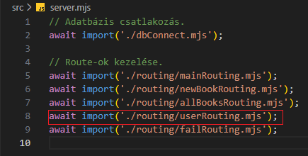
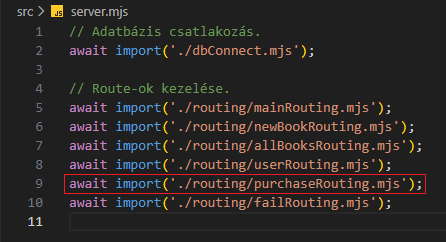

Vásárlás kezelése - purchaseRouting.mjs

Ebben a részben szerkesztjük az src/routing mappában a purchaseRouting.mjs állományt, amelyben összekötjük a /api/purchase route-ot a logikával.
-
Szerkesszük a
purchaseRouting.mjsállományt.
-
import app from '../app.mjs';- azappobjektum alapértelmezett beimportálása. -
import purchaseRouter from '../../routes/purchaseRoutes.mjs';- apurchaseRouterfüggvény alapértelmezett beimportálása. -
app.use('/api/purchase', purchaseRouter);- ausemiddlewaresegítségével a/api/purchaseroute-hoz csatoljuk apurchaseRouterfüggvényt.
Azaz bármikor is küldünk egyhttp://localhost:PORT/api/purchaselekérést a webszervernek, akkor az ehhez tartozó logikával tér vissza.
-
-
Szerkesszük újra a
server.mjsállományt. és-
await import('./routing/purchaseRouting.mjs');- importáljuk be apurchaseRouting.mjs-ben létrehozottpromise-t.
-